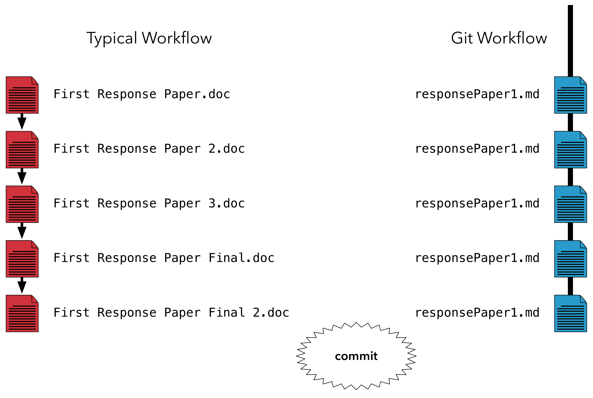

7.2 The Workflow of Git and GitHub
The typical approach to versioning for many students is manual. For a hypothetical class response paper, it might look something like this:
The author made an initial copy of the paper, and then used a haphazard and inconsistent approach for naming subsequent copies of the paper. We can presume that changes were made in a linear fashion, though it is easy to make changes to, say, First Response Paper 2.doc after First Response Paper 3.doc has been created and edited.
7.2.1 Commits
Instead of saving copies of their hypothetical paper, a student using GitHub could write the paper in a single document, commiting their changes as they progress to take “snapshots” of their progress. These snapshots contain information on changes the student has made, tracked line-by-line. So, at each point in which a new document would have been created in the typical workflow, a student using GitHub would simply commit their changes:

Git provides a number of useful features beyond simply tracking changes. Each commit is accompanied a message. These messages must have a short summary that appears on GitHub and can also have a longer description that can be used to describe in detail what changes are being applied with a specific commit:
Messages, combined with the changes that are tracked, allow users to trace the development of a single document or an entire project overtime:
This means that, if necessary, the project can also be rolled back to an earlier period. Finally, users can sync their commits with GitHub.com, hosting their changes and their data in a way that protects them against certain types of computer failures and also allowing them to easily share their work with others.
7.2.2 More About Repositories
Users of GitHub.com adhere to a couple of norms with their repositories that are worth knowing about. Repositories cannot have spaces in their names (much like objects in R), so the naming conventions that we will discuss in relation to R this semester all apply to GitHub as well!
Public GitHub repositories also contain (typically) at least three core files:
A license file - since the data is out there for public consumption, it is important to think about how that data is licensed. The norm among GitHub users has been to use open source licenses, which let others edit and adapt your work. There are a range of licenses that are commonly used on GitHub.
A README file - this describes the purpose and content of the project.
A .gitignore file - this stops certain types of files from being swept up by GitHub when a user syncs their files with a server.
When you clone your repositories, you will be prompted to save them on your computer. There are a number of ways in which this process can introduce sources for trouble down the road. The principle way that I have seen students run into problems with GitHub is by storing repositories on cloud storage services like Dropbox or Google Drive. In order to avoid any issues, I advise against storing GitHub repositories in an area of your computer that syncs with a cloud service.